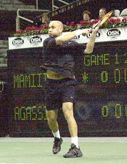

Previous: Breaking Down Your Opponent with Attitude | 🏠 Mental Game Home | Next: Bridging the Technical and Mental Divide: Implementing Technical Change under Pressure
Breathing and the Mental Game
Comprehensive unified tennis knowledge base — Fundamentals, Stroke Analysis, Reference Library, and more
Breathing and the Mental Game
By Jim Loehr
Take a deep breath. Feel better? The breath of life. What could be easier and more natural, right? You come into the world breathing deeply from your gut, but, for most people, that doesn't last. In our fast-paced society, with its ever-increasing levels of stress, good breathing habits are actually rare.
Many players, even at high levels, restrict their breathing under pressure.
Most people breath with short, restricted breaths, instead of using the deeper, slower abdominal breathing that facilitates relaxation and high energy. This is true in life and it's true on the tennis court as well.
A crucial aspect to improving mental toughness and sustaining the ideal performance state is developing better breathing habits on the court.
Our breathing is a window to our emotions. Our breathing patterns fluctuate as our feelings change. Conversely, we can have a significant effect on how we feel and how we perform by controlling the way we breathe.
Proper breathing technique is a thread that runs through every aspect of tennis, what happens during the points, and what happens in the vital time between points as well.
It is central to staying relaxed, maintaining confidence and a sense of fun, so that we fuel our performance from our positive emotions. In a literal sense, the key to emotional control and creating and sustaining our ideal performance state is breath control.

Breath control is central to fueling your tennis from positive emotions.
Breath Control
Let's look at how to develop breath control, both during actual play and in the time between points.
Most people tend to hold their breath under stress. In tennis, surprising numbers of players, including players at the top of professional tennis are actually barely breathing during competitive play. At a time when your body needs it most, there is a tendency to deprive it of the oxygen that is central to good performance.
Restricting breathing disrupts the flow of the game. It leads to muscle tension, short constricted strokes, poor movement and generally erratic play. Players may unconsciously make errors or go for big shots just to get the point over, so that they can get their breath again.
Holding your breath is actually a powerful way to stimulate the choking response most players are so desperate to avoid. Developing a breathing rhythm is essential to maintaining harmony and consistency in your play.
Start by observing how you breathe when you strike the ball. Your goal should be to get your breathing perfectly synchronized with your hitting. Exhale through your mouth at the contact point. The flow of air should be aggressive and long.
If you are doing it correctly, you will naturally make the long sound of "ah" as you hit. It will feel as if you are attacking the ball with your breath.
To develop this breathing pattern, an auditory cue will make the learning process much easier. As you strike the ball in practice, pronounce the word "yes" at the contact point.
With proper exhalation, you attack the ball with your breath.
If you have a long habit of holding your breath, it may take two to three weeks of practice to get your breathing synchronized. As a result, you will be more relaxed as you hit, since your muscles are naturally more relaxed when you exhale.
The result will be a more relaxed and fluid style. Your rhythm will improve. Your follow-throughs will be long and smooth. You will be more aggressive naturally by attacking the ball with your breathing.
Note that exhaling at contact is not necessarily the same thing as grunting. Many competitive players tend to grunt on contact. The grunt is actually unnecessary and, in fact, can contribute to breath constriction.
Players who grunt often make a short, high-pitched sound which actually produces reduced, rather than expanded exhalation.
If you are a grunter, start paying special attention to your breathing. Make sure that you are exhaling fully.
Using music can provide an additional dimension for the development of good breath control during play. Many great competitors believe that music actually facilitates the rhythm in tennis. Singing or humming to yourself can help you get breathing in sync with your play.
This is particularly valuable for players who are overly self-critical or analytical. Music can help to induce a neurological shift from the left side of the brain, which is logical and sequential, to the right side which is free flowing and spontaneous. No athlete can reach his full potential without using both sides of the brain.
Between point breathing as important as breathing during points.
Breathing correctly between points is as important as breathing correctly during points. Deep breaths are crucial to relaxing and recovering from the stress of playing points. They should be an inherent part of your between point behavior.
As you are walking to the back of the court after the point, focus on your breath. It should be long, full, and continuous. The more difficult or strenuous the point, the more anxiety you are likely to feel about the next point or the match situation, the more the breath should be full and complete.
The breath should actually come from your lower abdomen and held deeply from your stomach. It should expand first, then let your breath fill your chest and lungs. Now, exhale in the same relaxed fashion.
At the end of the breath, pull your abdominal muscles in to force the last of the air out. This is called abdominal or diaphragmatic breathing. If you do not naturally breathe this deeply, you will want to practice it off the court until it becomes very natural.
Remember that you have 25 seconds between points, so take your time. With practice, you will sense when you have recovered your emotional and physiological equilibrium through this relaxed breathing and are ready to prepare for the next point.
As you step up to the line, take a final deep breath before you start the point. This will keep your mind centered in the present, your focus on the ball rather than the match situation, and help you play the points one at a time.
The role of breathing is also critical in the time between games. On the changeovers, you have 90 seconds. You should get in the habit of taking all of it to recover and to sustain your mental toughness through the course of a match. Sit down. Towel off. Drink water. And focus on your breathing.
On the changeovers, towel off, drink water, and focus on your breathing.
Here is a special breath to help relax. Inhale slowly through your nose to the count of four. Now, hold that breath for two seconds. Now exhale through your mouth to a count of eight. Repeat this for the first 30 seconds of the changeover.
The use of breathing techniques can also play a vital role in easing pre-match tension. On match days, practice the relaxation breath.
Inhale through your nose to a count of four, hold for two counts, and then exhale through your mouth to a count of eight. Practiced over time, this technique can help relieve even the severest cases of pre-match nerves.
Breathing is essential for maintaining physical harmony in tennis. Breath control gives you a powerful technique for establishing and also for restoring your ideal performance state under a tense, competitive pressure. Practice these techniques and watch how they can affect your play and enjoyment of the game.

Jim Loehr is a legendary pioneer in the field of human performance. An elite tennis player himself who still competes nationally in USTA events, Jim created the field of Mental Toughness training with his revolutionary study of elite pro players. He has been one of the most influential voices in tennis and tennis coaching for over 30 years, and is the author of multiple best selling books.
He has expanded his influence far beyond sports with the creation of the Human Performance Institute where he and his staff have worked with hundreds of leaders in business, law enforcement, and military special forces. For the last decade he has also directed an academy for junior players helping young people learn what winning in life really means.
Source: tennisplayer.net archive — Breathing and the Mental Game.docx (John Yandell teaching library, 2002-2022). Extracted and rendered as HTML for Tennis Future Lab.